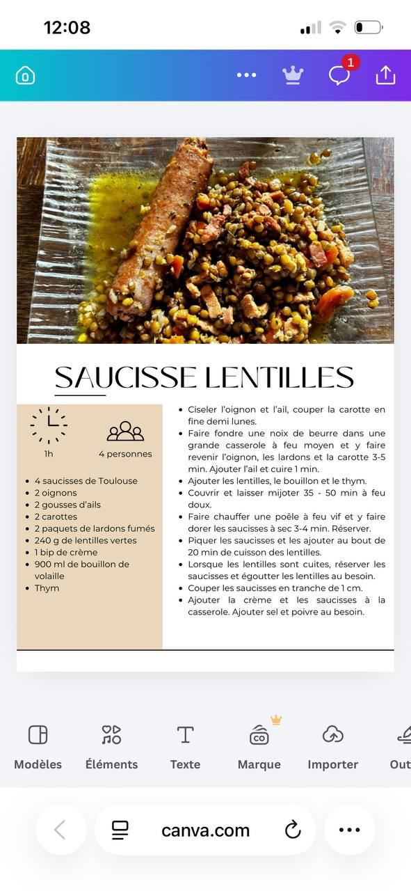

← Recettes
Saucisse Lentilles
🍖 Tradition
❄️ Se congèle
⏱️ 1h
👥 4 pers.
🍽️ Plat
Ingrédients
- 4 saucisses de Toulouse
- 2 oignons
- 2 gousses d'ail
- 2 carottes
- 2 paquets de lardons fumés
- 240 g de lentilles vertes
- 1 brique de crème
- 900 ml de bouillon de volaille
- Thym
Préparation
-
1Ciseler l'oignon et l'ail, couper la carotte en fine demi-lunes
-
2Faire fondre une noix de beurre dans une grande casserole à feu moyen et y faire revenir l'oignon, les lardons et la carotte 3-5 min. Ajouter l'ail et cuire 1 min
-
3Ajouter les lentilles, le bouillon et le thym. Couvrir et laisser mijoter 35-50 min à feu doux
-
4Faire chauffer une poêle à feu vif et y faire dorer les saucisses à sec 3-4 min. Réserver
-
5Piquer les saucisses et les ajouter au bout de 20 min de cuisson des lentilles
-
6Lorsque les lentilles sont cuites, réserver les saucisses et égoutter les lentilles au besoin
-
7Couper les saucisses en tranches de 1 cm. Ajouter la crème et les saucisses à la casserole. Ajouter sel et poivre au besoin
